kvm虚拟化
1. 虚拟化介�
虚拟化是云计算的基础。简å�•çš„说，虚拟化使得在一å�°ç‰©ç�†çš„æœ�务器上å�¯ä»¥è·‘多å�°è™šæ‹Ÿæœºï¼Œè™šæ‹Ÿæœºå…±äº«ç‰©ç�†æœºçš„ CPUã€�内å˜ã€�IO 硬件资æº�，但逻辑上虚拟机之间是相互隔离的。
物�机我们一般称为宿主机（Host），宿主机上�的虚拟机称为客户机（Guest）。
那么 Host 是如何将自己的硬件资�虚拟化，并�供给 Guest 使用的呢？
这个主�是通过一个�� Hypervisor 的程���的。
æ ¹æ�® Hypervisor çš„å®�ç�°æ–¹å¼�和所处的ä½�置，虚拟化å�ˆåˆ†ä¸ºä¸¤ç§�：
- 全虚拟化
- �虚拟化
全虚拟化：
Hypervisor 直�安装在物�机上，多个虚拟机在 Hypervisor 上�行。Hypervisor ��方�一般是一个特殊定制的 Linux 系统。Xen 和 VMWare 的 ESXi 都��这个类�

�虚拟化：
物�机上首先安装常规的�作系统，比如 Redhat�Ubuntu 和 Windows。Hypervisor 作为 OS 上的一个程�模��行，并对管�虚拟机进行管�。KVM�VirtualBox 和 VMWare Workstation 都��这个类�
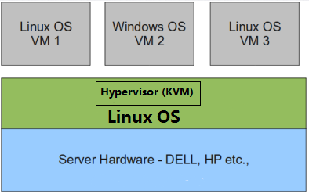
�论上讲：
全虚拟化一般对硬件虚拟化功能进行了特别优化，性能上比�虚拟化�高；
å�Šè™šæ‹ŸåŒ–å› ä¸ºåŸºäº�普通的æ“�作系统，会比较ç�µæ´»ï¼Œæ¯”如支æŒ�虚拟机嵌套。嵌套æ„�味ç�€å�¯ä»¥åœ¨KVM虚拟机ä¸å†�è¿�è¡ŒKVM。
2. kvm介�
kVM 全称是 Kernel-Based Virtual Machine。也就是说 KVM 是基äº� Linux å†…æ ¸å®�ç�°çš„。
KVMæœ‰ä¸€ä¸ªå†…æ ¸æ¨¡å�—å�« kvm.ko，å�ªç”¨äº�管ç�†è™šæ‹Ÿ CPU 和内å˜ã€‚
é‚£ IO 的虚拟化，比如å˜å‚¨å’Œç½‘络设备则是由 Linux å†…æ ¸ä¸�Qemuæ�¥å®�ç�°ã€‚
作为一个 Hypervisor，KVM 本身å�ªå…³æ³¨è™šæ‹Ÿæœºè°ƒåº¦å’Œå†…å˜ç®¡ç�†è¿™ä¸¤ä¸ªæ–¹é�¢ã€‚IO 外设的任务交给 Linux å†…æ ¸å’Œ Qemu。
大家在网上看 KVM ç›¸å…³æ–‡ç« çš„æ—¶å€™è‚¯å®šç»�常会看到 Libvirt 这个东西。
Libvirt 就是 KVM 的管�工具。
å…¶å®�，Libvirt 除了能管ç�† KVM è¿™ç§� Hypervisor，还能管ç�† Xen，VirtualBox ç‰ã€‚
Libvirt 包� 3 个东西：�� daemon 程� libvirtd�API 库和命令行工具 virsh
- libvirtd是�务程�，�收和处� API 请求；
- API 库使得其他人�以开�基� Libvirt 的高级工具，比如 virt-manager，这是个图形化的 KVM 管�工具；
- virsh 是我们�常�用的 KVM 命令行工具
3. kvm部署
�境说�：
| 系统类� | IP |
|---|---|
| RHEL7 | 172.16.12.128 |
3.1 kvm安装
部署å‰�请确ä¿�ä½ çš„CPU虚拟化功能已开å�¯ã€‚分为两ç§�情况：
- 虚拟机�关机设置CPU虚拟化
- 物�机�在BIOS里开�CPU虚拟化
//å…³é—防ç�«å¢™ä¸�SELINUX
[root@kvm ~]# systemctl stop firewalld
[root@kvm ~]# systemctl disable firewalld
Removed symlink /etc/systemd/system/multi-user.target.wants/firewalld.service.
Removed symlink /etc/systemd/system/dbus-org.fedoraproject.FirewallD1.service.
[root@kvm ~]# setenforce 0
[root@kvm ~]# sed -ri 's/^(SELINUX=).*/\1disabled/g' /etc/selinux/config
[root@localhost ~]# reboot
//�置网络�
[root@kvm yum.repos.d]# curl -o /etc/yum.repos.d/CentOS7-Base-163.repo http://mirrors.163.com/.help/CentOS7-Base-163.repo
[root@kvm ~]# sed -i 's/\$releasever/7/g' /etc/yum.repos.d/CentOS7-Base-163.repo
[root@kvm ~]# sed -i 's/^enabled=.*/enabled=1/g' /etc/yum.repos.d/CentOS7-Base-163.repo
[root@kvm ~]# yum -y install epel-release vim wget net-tools unzip zip gcc gcc-c++
安装过程略.....
//验è¯�CPU是å�¦æ”¯æŒ�KVM；如æ�œç»“æ�œä¸æœ‰vmx（Intel）或svm(AMD)å—æ ·ï¼Œå°±è¯´æ˜�CPU的支æŒ�çš„
[root@kvm ~]# egrep -o 'vmx|svm' /proc/cpuinfo
vmx
vmx
vmx
vmx
//kvm安装
[root@kvm ~]# yum -y install qemu-kvm qemu-kvm-tools qemu-img virt-manager libvirt libvirt-python libvirt-client virt-install virt-viewer bridge-utils libguestfs-tools
安装过程略......
//å› ä¸ºè™šæ‹Ÿæœºä¸ç½‘络，我们一般都是和公å�¸çš„其他æœ�务器是å�Œä¸€ä¸ªç½‘段，所以我们需è¦�把 \
KVMæœ�务器的网å�¡é…�ç½®æˆ�æ¡¥æ�¥æ¨¡å¼�ã€‚è¿™æ ·çš„è¯�KVM的虚拟机就å�¯ä»¥é€šè¿‡è¯¥æ¡¥æ�¥ç½‘å�¡å’Œå…¬å�¸å†…部 \
其他�务器处��一网段
//æ¤å¤„我的网å�¡æ˜¯ens33，所以用br0æ�¥æ¡¥æ�¥ens33网å�¡
[root@kvm ~]# cd /etc/sysconfig/network-scripts/
[root@kvm network-scripts]# ls
ifcfg-ens33 ifdown-isdn ifup ifup-plip ifup-tunnel
ifcfg-lo ifdown-post ifup-aliases ifup-plusb
.....æ¤å¤„内容çœ�ç•¥
[root@kvm network-scripts]# cp ifcfg-ens33 ifcfg-br0
[root@kvm network-scripts]# cat ifcfg-br0
TYPE=Bridge
DEVICE=br0
NM_CONTROLLED=no
BOOTPROTO=static
NAME=br0
ONBOOT=yes
IPADDR=192.168.160.109
NETMASK=255.255.255.0
GATEWAY=192.168.160.1
DNS1=114.114.114.114
DNS2=8.8.8.8
[root@kvm network-scripts]# cat ifcfg-ens33
TYPE=Ethernet
BOOTPROTO=static
NAME=ens33
DEVICE=ens33
ONBOOT=yes
BRIDGE=br0
NM_CONTROLLED=no
//��网络
[root@kvm ~]# systemctl restart network
[root@kvm ~]# ip a
1: lo: <LOOPBACK,UP,LOWER_UP> mtu 65536 qdisc noqueue state UNKNOWN qlen 1
link/loopback 00:00:00:00:00:00 brd 00:00:00:00:00:00
inet 127.0.0.1/8 scope host lo
valid_lft forever preferred_lft forever
inet6 ::1/128 scope host
valid_lft forever preferred_lft forever
2: ens33: <BROADCAST,MULTICAST,UP,LOWER_UP> mtu 1500 qdisc pfifo_fast master br0 state UP qlen 1000
link/ether 00:0c:29:4c:50:b4 brd ff:ff:ff:ff:ff:ff
3: virbr0: <NO-CARRIER,BROADCAST,MULTICAST,UP> mtu 1500 qdisc noqueue state DOWN qlen 1000
link/ether 52:54:00:60:a8:ea brd ff:ff:ff:ff:ff:ff
inet 192.168.122.1/24 brd 192.168.122.255 scope global virbr0
valid_lft forever preferred_lft forever
4: virbr0-nic: <BROADCAST,MULTICAST> mtu 1500 qdisc pfifo_fast master virbr0 state DOWN qlen 1000
link/ether 52:54:00:60:a8:ea brd ff:ff:ff:ff:ff:ff
5: br0: <BROADCAST,MULTICAST,UP,LOWER_UP> mtu 1500 qdisc noqueue state UP qlen 1000
link/ether 72:63:57:0a:ca:76 brd ff:ff:ff:ff:ff:ff
inet 192.168.160.109/24 brd 192.168.160.255 scope global br0
valid_lft forever preferred_lft forever
inet6 fe80::7063:57ff:fe0a:ca76/64 scope link
valid_lft forever preferred_lft forever
//�动�务
[root@kvm ~]# systemctl start libvirtd
[root@kvm ~]# systemctl enable libvirtd
//验�安装结�
[root@kvm ~]# lsmod|grep kvm
kvm_intel 170086 0
kvm 566340 1 kvm_intel
irqbypass 13503 1 kvm
//测试并验�安装结�
[root@kvm ~]# virsh -c qemu:///system list
Id Name State
----------------------------------------------------
[root@kvm ~]# virsh --version
3.9.0
[root@kvm ~]# virt-install --version
1.4.3
[root@kvm ~]# ln -s /usr/libexec/qemu-kvm /usr/bin/qemu-kvm
[root@kvm ~]# ll /usr/bin/qemu-kvm
lrwxrwxrwx 1 root root 21 Oct 18 10:57 /usr/bin/qemu-kvm -> /usr/libexec/qemu-kvm
[root@kvm ~]# lsmod |grep kvm
kvm_intel 170086 0
kvm 566340 1 kvm_intel
irqbypass 13503 1 kvm
//查看网桥信�
[root@kvm ~]# brctl show
bridge name bridge id STP enabled interfaces
br0 8000.000c294c50b4 no ens33
virbr0 8000.52540060a8ea yes virbr0-nic
3.2 kvm web管�界�安装
kvm 的 web 管�界�是由 webvirtmgr 程��供的。
//安装�赖包
[root@kvm ~]# yum -y install git python-pip libvirt-python libxml2-python python-websockify supervisor nginx python-devel
//�级pip
[root@kvm ~]# pip install --upgrade pip
//ä»�github上下载webvirtmgr代ç �
[root@kvm ~]# cd /usr/local/src/
[root@kvm src]# git clone git://github.com/retspen/webvirtmgr.git
Cloning into 'webvirtmgr'...
remote: Enumerating objects: 5730, done.
remote: Total 5730 (delta 0), reused 0 (delta 0), pack-reused 5730
Receiving objects: 100% (5730/5730), 3.01 MiB | 39.00 KiB/s, done.
Resolving deltas: 100% (3688/3688), done.
//安装webvirtmgr
[root@kvm src]# cd webvirtmgr/
[root@kvm webvirtmgr]# pip install -r requirements.txt
Collecting django==1.5.5 (from -r requirements.txt (line 1))
Downloading https://files.pythonhosted.org/packages/38/49/93511c5d3367b6b21fc2995a0e53399721afc15e4cd6eb57be879ae13ad4/Django-1.5.5.tar.gz (8.1MB)
57% |██████████████████▌ | 4.7MB 38kB/s eta 0:01:28
.....æ¤å¤„çœ�略安装æ¥éª¤
//检查sqlite3是�安装
[root@kvm webvirtmgr]# python
Python 2.7.5 (default, May 3 2017, 07:55:04)
[GCC 4.8.5 20150623 (Red Hat 4.8.5-14)] on linux2
Type "help", "copyright", "credits" or "license" for more information.
>>> import sqlite3
>>> exit()
//�始化��信�
[root@kvm webvirtmgr]# python manage.py syncdb
WARNING:root:No local_settings file found.
Creating tables ...
Creating table auth_permission
Creating table auth_group_permissions
Creating table auth_group
Creating table auth_user_groups
Creating table auth_user_user_permissions
Creating table auth_user
Creating table django_content_type
Creating table django_session
Creating table django_site
Creating table servers_compute
Creating table instance_instance
Creating table create_flavor
You just installed Django's auth system, which means you don't have any superusers defined.
Would you like to create one now? (yes/no): yes //é—®ä½ æ˜¯å�¦åˆ›å»ºè¶…级管ç�†å‘˜å¸�å�·
Username (leave blank to use 'root'): //指定超级管�员��用户�，默认留空为root
Email address: sean1002@126.com //设置超级管�员邮箱
Password: //设置超级管ç�†å‘˜å¯†ç �
Password (again): //å†�次输入超级管ç�†å‘˜å¯†ç �
Superuser created successfully.
Installing custom SQL ...
Installing indexes ...
Installed 6 object(s) from 1 fixture(s)
//拷�web网页至指定目录
[root@kvm webvirtmgr]# mkdir /var/www
[root@kvm webvirtmgr]# cp -r /usr/local/src/webvirtmgr /var/www/
[root@kvm webvirtmgr]# chown -R nginx.nginx /var/www/webvirtmgr/
//生�密钥
[root@kvm ~]# ssh-keygen -t rsa
Generating public/private rsa key pair.
Enter file in which to save the key (/root/.ssh/id_rsa):
Created directory '/root/.ssh'.
Enter passphrase (empty for no passphrase):
Enter same passphrase again:
Your identification has been saved in /root/.ssh/id_rsa.
Your public key has been saved in /root/.ssh/id_rsa.pub.
The key fingerprint is:
SHA256:CQoZtso2M5Uo39lKvjZboncqakQ69iJt5wnjiJKZNhw root@kvm
The key's randomart image is:
+---[RSA 2048]----+
| o |
| ..+. |
|..+o . |
|o+.o + . . |
|+*. = . S |
|+E+o . |
|+*= + . |
|BO+===. |
|Oo=**= |
+----[SHA256]-----+
//由�这里webvirtmgr和kvm�务部署在�一�机器，所以这里本地信任。如�kvm部署在其他机器，那么这个是它的ip
[root@kvm ~]# ssh-copy-id 192.168.160.109
/usr/bin/ssh-copy-id: INFO: Source of key(s) to be installed: "/root/.ssh/id_rsa.pub"
The authenticity of host '192.168.160.109 (192.168.160.109)' can't be established.
ECDSA key fingerprint is SHA256:UszC1ZeHM7xw/uefVkJoXW6XgRw+Jl51tAXLjFERclE.
ECDSA key fingerprint is MD5:b3:f1:02:b8:01:8e:53:a7:87:09:c0:75:24:4c:ad:88.
Are you sure you want to continue connecting (yes/no)? yes
/usr/bin/ssh-copy-id: INFO: attempting to log in with the new key(s), to filter out any that are already installed
/usr/bin/ssh-copy-id: INFO: 1 key(s) remain to be installed -- if you are prompted now it is to install the new keys
root@192.168.160.109's password:
Number of key(s) added: 1
Now try logging into the machine, with: "ssh '192.168.160.109'"
and check to make sure that only the key(s) you wanted were added.
//�置端�转�
[root@kvm ~]# ssh 192.168.160.109 -L localhost:8000:localhost:8000 -L localhost:6080:localhost:60
Last login: Thu Oct 18 08:26:40 2018 from 192.168.160.36
[root@kvm ~]# ss -antl
State Recv-Q Send-Q Local Address:Port Peer Address:Port
LISTEN 0 128 *:111 *:*
LISTEN 0 5 192.168.122.1:53 *:*
LISTEN 0 128 *:22 *:*
LISTEN 0 100 127.0.0.1:25 *:*
LISTEN 0 128 127.0.0.1:6080 *:*
LISTEN 0 128 127.0.0.1:8000 *:*
LISTEN 0 128 :::111 :::*
LISTEN 0 128 :::22 :::*
LISTEN 0 100 ::1:25 :::*
LISTEN 0 128 ::1:6080 :::*
LISTEN 0 128 ::1:8000 :::*
//�置nginx
[root@kvm ~]# vim /etc/nginx/nginx.conf
user nginx;
worker_processes auto;
error_log /var/log/nginx/error.log;
pid /run/nginx.pid;
include /usr/share/nginx/modules/*.conf;
events {
worker_connections 1024;
}
http {
log_format main '$remote_addr - $remote_user [$time_local] "$request" '
'$status $body_bytes_sent "$http_referer" '
'"$http_user_agent" "$http_x_forwarded_for"';
access_log /var/log/nginx/access.log main;
sendfile on;
tcp_nopush on;
tcp_nodelay on;
keepalive_timeout 65;
types_hash_max_size 2048;
include /etc/nginx/mime.types;
default_type application/octet-stream;
include /etc/nginx/conf.d/*.conf;
server {
listen 80;
server_name localhost;
include /etc/nginx/default.d/*.conf;
location / {
root html;
index index.html index.htm;
}
error_page 404 /404.html;
location = /40x.html {
}
error_page 500 502 503 504 /50x.html;
location = /50x.html {
}
}
}
[root@kvm ~]# vim /etc/nginx/conf.d/webvirtmgr.conf
server {
listen 80 default_server;
server_name $hostname;
#access_log /var/log/nginx/webvirtmgr_access_log;
location /static/ {
root /var/www/webvirtmgr/webvirtmgr;
expires max;
}
location / {
proxy_pass http://127.0.0.1:8000;
proxy_set_header X-Real-IP $remote_addr;
proxy_set_header X-Forwarded-for $proxy_add_x_forwarded_for;
proxy_set_header Host $host:$server_port;
proxy_set_header X-Forwarded-Proto $remote_addr;
proxy_connect_timeout 600;
proxy_read_timeout 600;
proxy_send_timeout 600;
client_max_body_size 1024M;
}
}
//确�bind绑定的是本机的8000端�
[root@kvm ~]# vim /var/www/webvirtmgr/conf/gunicorn.conf.py
.....æ¤å¤„çœ�ç•¥Nè¡Œ
bind = '0.0.0.0:8000' //ç¡®ä¿�æ¤å¤„绑定的是本机的8000端å�£ï¼Œè¿™ä¸ªåœ¨nginxé…�ç½®ä¸å®šä¹‰äº†ï¼Œè¢«ä»£ç�†çš„端å�£
backlog = 2048
.....æ¤å¤„çœ�ç•¥Nè¡Œ
//��nginx
[root@kvm ~]# systemctl restart nginx
[root@kvm ~]# ss -antl
State Recv-Q Send-Q Local Address:Port Peer Address:Port
LISTEN 0 128 *:111 *:*
LISTEN 0 128 *:80 *:*
LISTEN 0 5 192.168.122.1:53 *:*
LISTEN 0 128 *:22 *:*
LISTEN 0 100 127.0.0.1:25 *:*
LISTEN 0 128 127.0.0.1:6080 *:*
LISTEN 0 128 127.0.0.1:8000 *:*
LISTEN 0 128 :::111 :::*
LISTEN 0 128 :::22 :::*
LISTEN 0 100 ::1:25 :::*
LISTEN 0 128 ::1:6080 :::*
LISTEN 0 128 ::1:8000 :::*
//设置supervisor
[root@kvm ~]# vim /etc/supervisord.conf
.....æ¤å¤„çœ�略上é�¢çš„内容，在文件最å��åŠ ä¸Šä»¥ä¸‹å†…å®¹
[program:webvirtmgr]
command=/usr/bin/python2 /var/www/webvirtmgr/manage.py run_gunicorn -c /var/www/webvirtmgr/conf/gunicorn.conf.py
directory=/var/www/webvirtmgr
autostart=true
autorestart=true
logfile=/var/log/supervisor/webvirtmgr.log
log_stderr=true
user=nginx
[program:webvirtmgr-console]
command=/usr/bin/python2 /var/www/webvirtmgr/console/webvirtmgr-console
directory=/var/www/webvirtmgr
autostart=true
autorestart=true
stdout_logfile=/var/log/supervisor/webvirtmgr-console.log
redirect_stderr=true
user=nginx
//�动supervisor并设置开机自�
[root@kvm ~]# systemctl start supervisord
[root@kvm ~]# systemctl enable supervisord
Created symlink from /etc/systemd/system/multi-user.target.wants/supervisord.service to /usr/lib/systemd/system/supervisord.service.
[root@kvm ~]# systemctl status supervisord
â—� supervisord.service - Process Monitoring and Control Daemon
Loaded: loaded (/usr/lib/systemd/system/supervisord.service; enabled; vendor preset: disabled)
Active: active (running) since Thu 2018-10-18 11:59:33 CST; 25s ago
Main PID: 17918 (supervisord)
CGroup: /system.slice/supervisord.service
└─17918 /usr/bin/python /usr/bin/supervisord -c /etc/supervisord.conf
Oct 18 11:59:33 kvm systemd[1]: Starting Process Monitoring and Control Daemon...
Oct 18 11:59:33 kvm systemd[1]: Started Process Monitoring and Control Daemon.
[root@kvm webvirtmgr]# ss -antl
State Recv-Q Send-Q Local Address:Port Peer Address:Port
LISTEN 0 128 *:111 *:*
LISTEN 0 128 *:80 *:*
LISTEN 0 5 192.168.122.1:53 *:*
LISTEN 0 128 *:22 *:*
LISTEN 0 100 127.0.0.1:25 *:*
LISTEN 0 128 *:8000 *:*
LISTEN 0 100 *:6080 *:*
LISTEN 0 128 :::111 :::*
LISTEN 0 128 :::22 :::*
LISTEN 0 100 ::1:25 :::*
//�置nginx用户
[root@kvm home]# su - nginx -s /bin/bash
-bash-4.2$ ssh-keygen -t rsa
Generating public/private rsa key pair.
Enter file in which to save the key (/var/lib/nginx/.ssh/id_rsa):
Created directory '/var/lib/nginx/.ssh'.
Enter passphrase (empty for no passphrase):
Enter same passphrase again:
Your identification has been saved in /var/lib/nginx/.ssh/id_rsa.
Your public key has been saved in /var/lib/nginx/.ssh/id_rsa.pub.
The key fingerprint is:
SHA256:rdbmW/YIXxAJBzPsd9q9eKHPjWtSZ5EQC5li3tkczYI nginx@localhost.localdomain
The key's randomart image is:
+---[RSA 2048]----+
| .=o=.+ |
| o.E.=.o |
| o.o *.+ .|
| o.o.+.o |
| S ...+ ..|
| o ..o.+|
| o + o.+oo|
| . o =.*o+.|
| o.oo*+.|
+----[SHA256]-----+
-bash-4.2$ touch ~/.ssh/config && echo -e "StrictHostKeyChecking=no\nUserKnownHostsFile=/dev/null" >> ~/.ssh/config
-bash-4.2$ chmod 0600 ~/.ssh/config
-bash-4.2$ ssh-copy-id root@192.168.160.109
/bin/ssh-copy-id: INFO: Source of key(s) to be installed: "/var/lib/nginx/.ssh/id_rsa.pub"
/bin/ssh-copy-id: INFO: attempting to log in with the new key(s), to filter out any that are already installed
/bin/ssh-copy-id: INFO: 1 key(s) remain to be installed -- if you are prompted now it is to install the new keys
Warning: Permanently added '192.168.160.109' (ECDSA) to the list of known hosts.
root@192.168.160.109's password:
Number of key(s) added: 1
Now try logging into the machine, with: "ssh 'root@192.168.160.109'"
and check to make sure that only the key(s) you wanted were added.
-bash-4.2$ exit
logout
[root@kvm ~]# vim /etc/polkit-1/localauthority/50-local.d/50-libvirt-remote-access.pkla
[Remote libvirt SSH access]
Identity=unix-user:root
Action=org.libvirt.unix.manage
ResultAny=yes
ResultInactive=yes
ResultActive=yes
[root@kvm ~]# chown -R root.root /etc/polkit-1/localauthority/50-local.d/50-libvirt-remote-access.pkla
[root@kvm ~]# systemctl restart nginx
[root@kvm ~]# systemctl restart libvirtd
3.3 kvm web界�管�
通过ip地�在�览器上访问kvm，例如我这里就是：http://192.168.160.109/login

3.3.1 kvm��管�
创建SSH��：

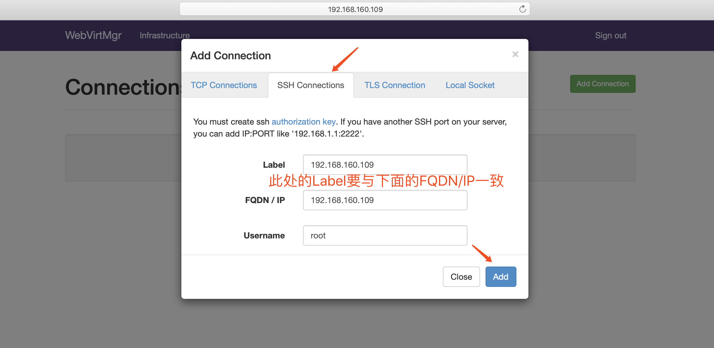

3.3.2 kvmå˜å‚¨ç®¡ç�†
创建å˜å‚¨ï¼š
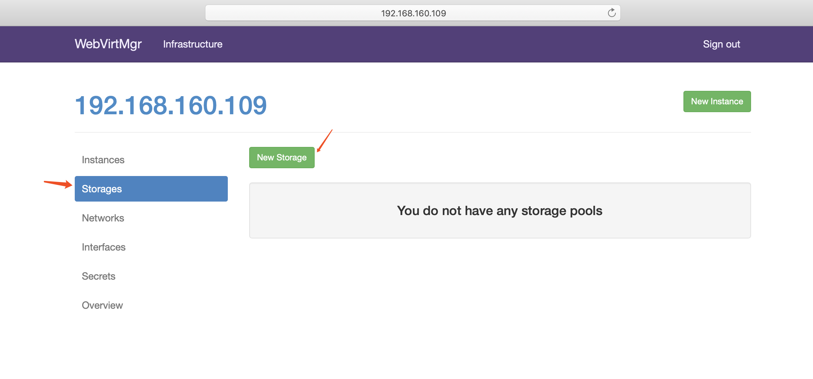

进入å˜å‚¨ï¼š
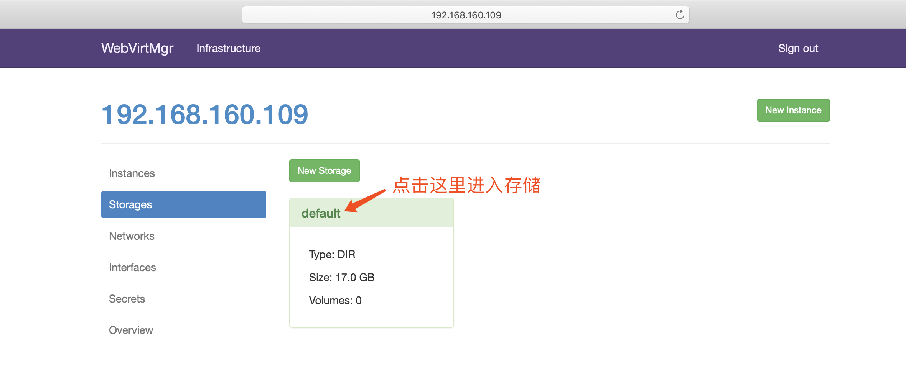
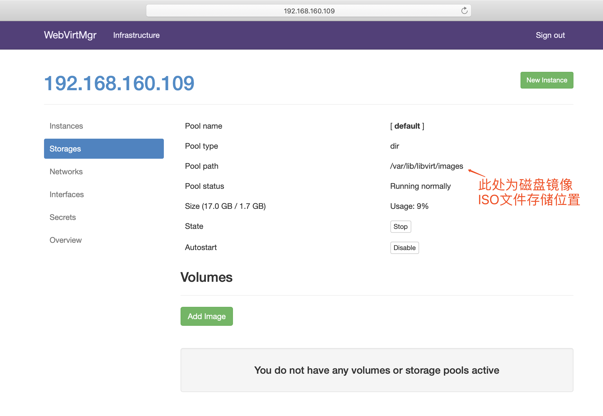
通过远程è¿�æ�¥è½¯ä»¶ä¸Šä¼ ISOé•œåƒ�文件至å˜å‚¨ç›®å½•/var/lib/libvirt/images/
[root@kvm ~]# cd /var/lib/libvirt/images/
[root@kvm images]# ls
[root@kvm images]#
Upload SCP
CentOS-7-x86_64-DVD-1804.iso (4263.00 MB, 8:45 min = 8.12 MB/sec)
[root@kvm images]# ls
CentOS-7-x86_64-DVD-1804.iso
在 web ç•Œé�¢æŸ¥çœ‹ISOé•œåƒ�是å�¦å˜åœ¨

创建系统安装镜�


æ·»åŠ æˆ�功如下图所示

3.3.3 kvm网络管�
æ·»åŠ æ¡¥æ�¥ç½‘络
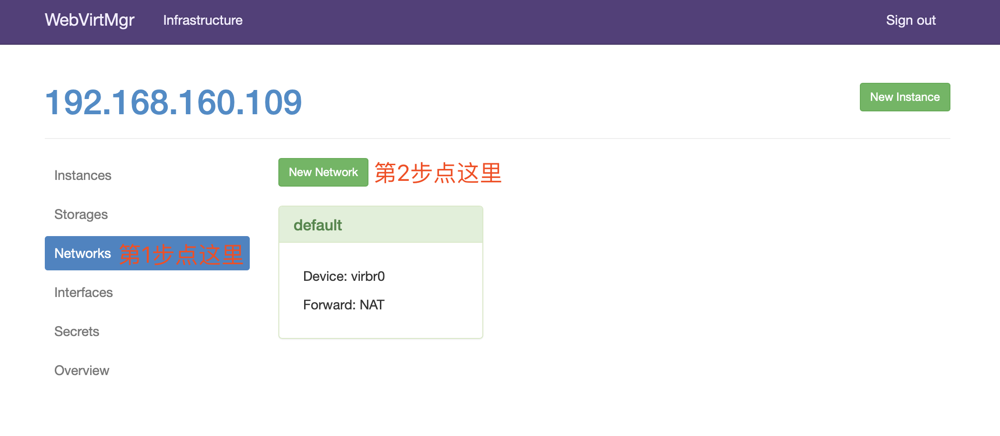

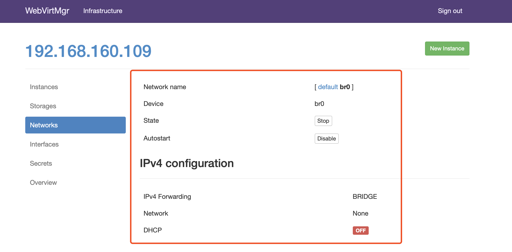
3.3.4 �例管�
�例(虚拟机)创建
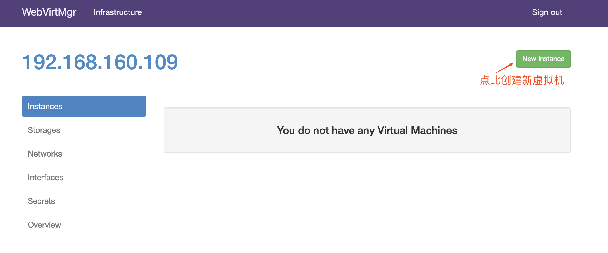

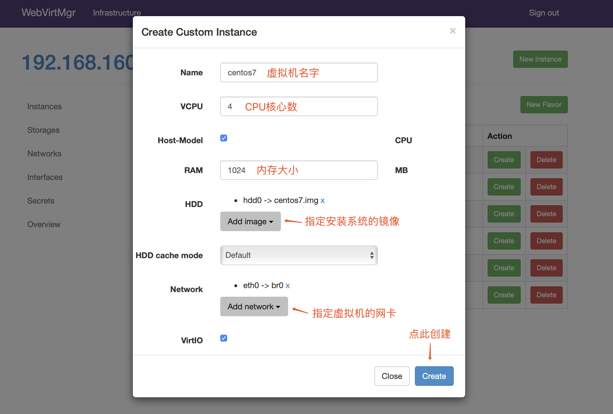
虚拟机�入光盘

设置在 web 上访问虚拟机的密ç �

�动虚拟机
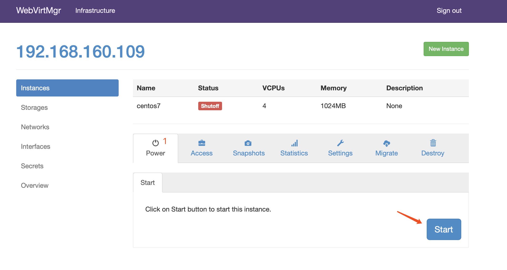

虚拟机安装
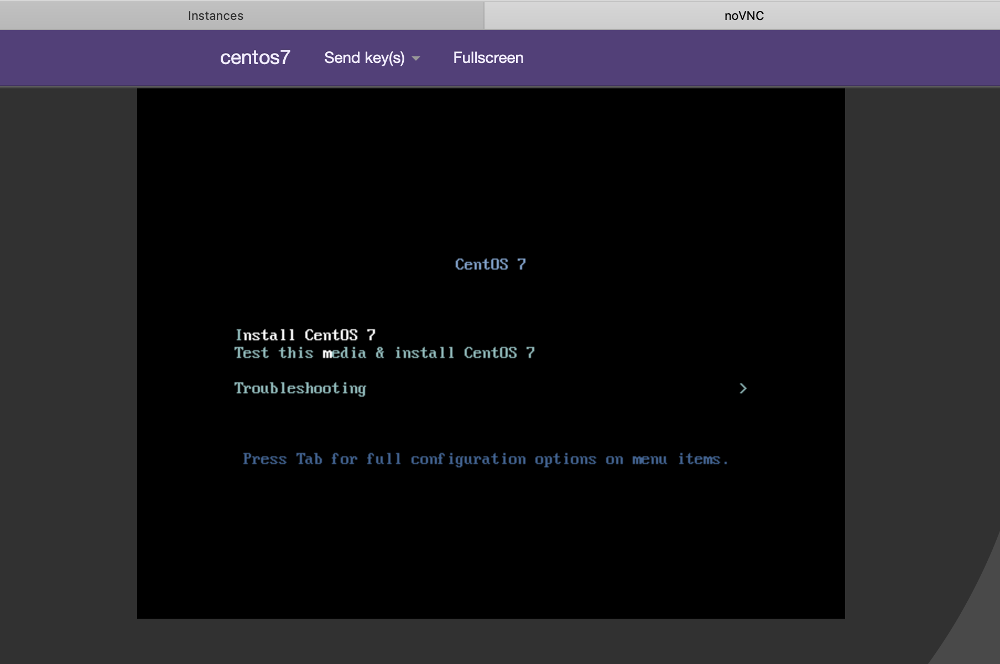
虚拟机安装æ¥éª¤å°±æ˜¯å®‰è£…系统的æ¥éª¤ï¼Œæ¤å¤„å°±ä¸�å†�赘述
4.故障案例
4.1 案例1
web界��置完���能会出�以下错误界�

解决方法是安装novnc并通过novnc_server�动一个vnc
[root@localhost ~]# ll /etc/rc.local
lrwxrwxrwx. 1 root root 13 Aug 6 2018 /etc/rc.local -> rc.d/rc.local
[root@localhost ~]# ll /etc/rc.d/rc.local
-rw-r--r-- 1 root root 513 Mar 11 22:35 /etc/rc.d/rc.local
[root@localhost ~]# chmod +x /etc/rc.d/rc.local
[root@localhost ~]# ll /etc/rc.d/rc.local
-rwxr-xr-x 1 root root 513 Mar 11 22:35 /etc/rc.d/rc.local
[root@localhost ~]# vim /etc/rc.d/rc.local
......æ¤å¤„çœ�ç•¥Nè¡Œ
# that this script will be executed during boot.
touch /var/lock/subsys/local
nohup novnc_server 172.16.12.128:5920 &
[root@localhost ~]# . /etc/rc.d/rc.local
å�šå®Œä»¥ä¸Šæ“�作å��å†�次访问å�³å�¯æ£å¸¸è®¿é—®
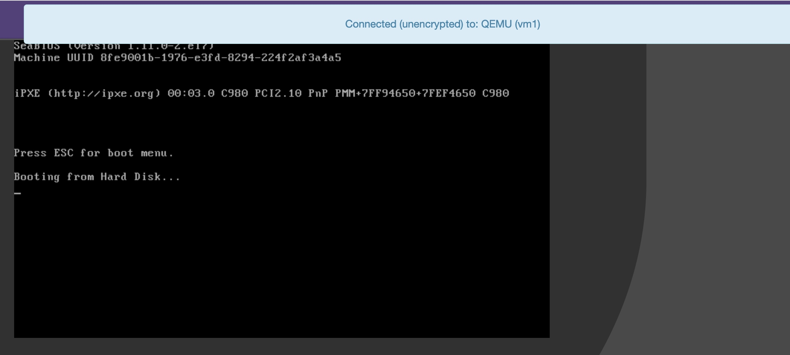
4.2 案例2
第一次通过web访问kvm时�能会一直访问�了，一直转圈，而命令行界�一直报错(too many open files)
æ¤æ—¶éœ€è¦�对nginx进行é…�ç½®
[root@localhost ~]# vim /etc/nginx/nginx.conf
....æ¤å¤„çœ�ç•¥Nè¡Œ
user nginx;
worker_processes auto;
error_log /var/log/nginx/error.log;
pid /run/nginx.pid;
worker_rlimit_nofile 655350; //æ·»åŠ æ¤è¡Œé…�ç½®
# Load dynamic modules. See /usr/share/nginx/README.dynamic.
....æ¤å¤„çœ�ç•¥Nè¡Œ
[root@localhost ~]# systemctl restart nginx
然�对系统�数进行设置
[root@localhost ~]# vim /etc/security/limits.conf
....æ¤å¤„çœ�ç•¥Nè¡Œ
# End of file
* soft nofile 655350
* hard nofile 655350
到æ¤é—®é¢˜å�³å�¯è§£å†³
作业
写å�šå®¢ï¼Œå°†kvm的详细部署ç»�过写æˆ�å�šå®¢ï¼Œéƒ¨ç½²è¿‡ç¨‹ä¸å¦‚é�‡åˆ°é—®é¢˜ä¹Ÿè¦�写进å�šå®¢ï¼Œå¹¶è¯´æ˜�如何解决的